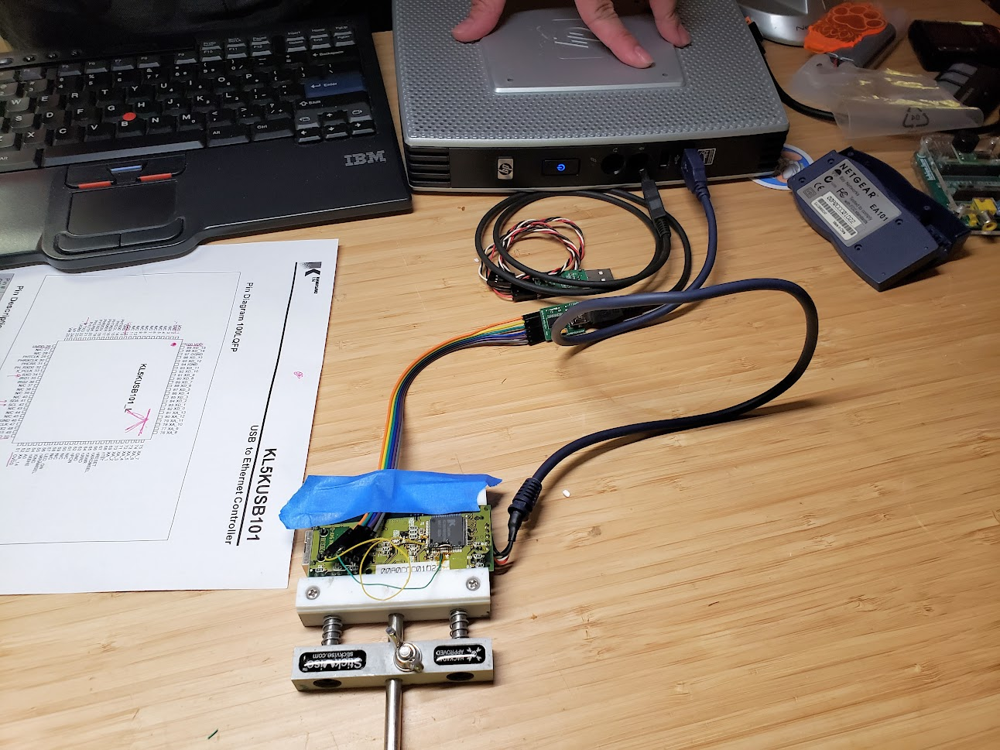
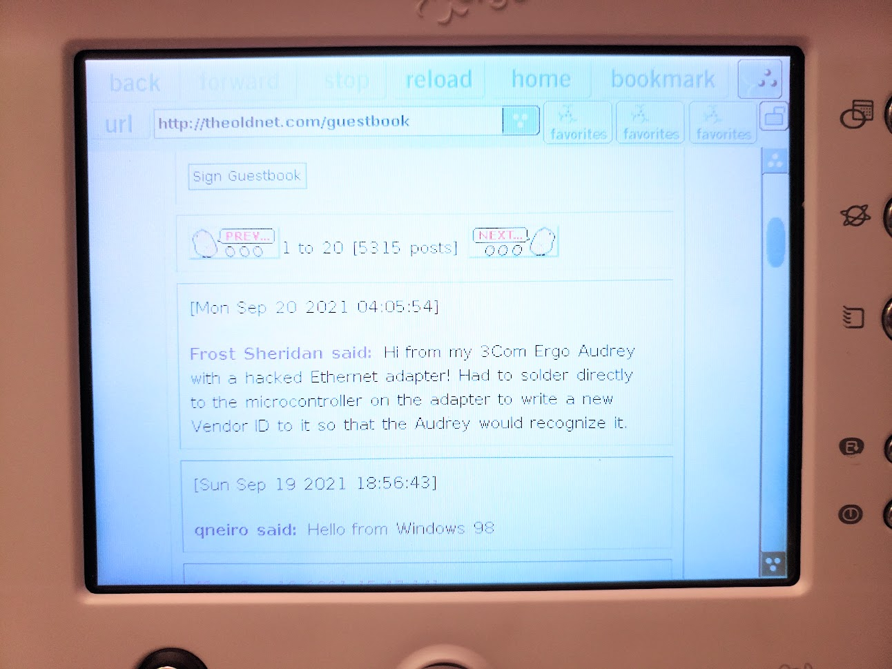

ever since coming across this wild-looking thing online, i knew i had to have one for my collection someday. when i found one on ebay for a whole $20, i knew that it was time.
the 3com ergo audrey isn't a regular computer - it's an internet appliance, a very limited type of computer that can only be used for accessing the internet, hence the name internet appliance. this type of computer was popular in the very early 2000s when people wanted to try out this cool new World Wide Web thing without having to buy and learn how to use a whole computer.
the audrey was intended to be set up in the kitchen for quickly looking up info on the web, such as recipes. it's designed to take up very little space - it uses a touchscreen instead of a mouse, and the included wireless keyboard can be stored on the back of the unit when not in use. in addition to web browsing, the audrey can also sync calendars with palm devices, send and receieve e-mail, and access web apps called "channels". it runs on a QNX-based OS with a very custom interface - using the audrey is nothing like using any other computer on the planet. it kinda feels like it was made by an alien who only has a very cursory knowledge of earth computers.
audrey primarily wants to access the internet via dialup, which is a bit of a problem for me as i haven't had a landline phone in years. fortunately, it's also able to get online with a USB ethernet adapter... a very specific adapter made by 3com that's basically impossible to find these days, of course. other ethernet adapters that have the same chipset as the 3com one will work with the audrey, but their USB vendor and product IDs need to be reprogrammed to match the 3com one in order to be recognized by the audrey.
i went with a netgear EA101 because they're one of the most plentiful adapters with a compatible chipset. now i needed to use qttools, an internal manufacturer tool for reprogramming the VID and PID. supposedly, you can load a custom windows driver for the ethernet adapter and conveniently do the programming over USB, but that didn't work for me no matter what i tried. i noticed that the qttools program could also do programming over serial, so with the help of a friend, i cracked open the adapter, used the chipset datasheet to locate the RX/TX pins on the IC, and soldered bodge wires to it so i could connect it to a FTDI USB-to-serial adapter.
this actually worked!! qttools was able to write the new PID and VID without an issue. the audrey recognized the adapter and could finally access the internet through my home network! i posted about my feat on The Old Net guestbook using the audrey's newfound internet powers.
